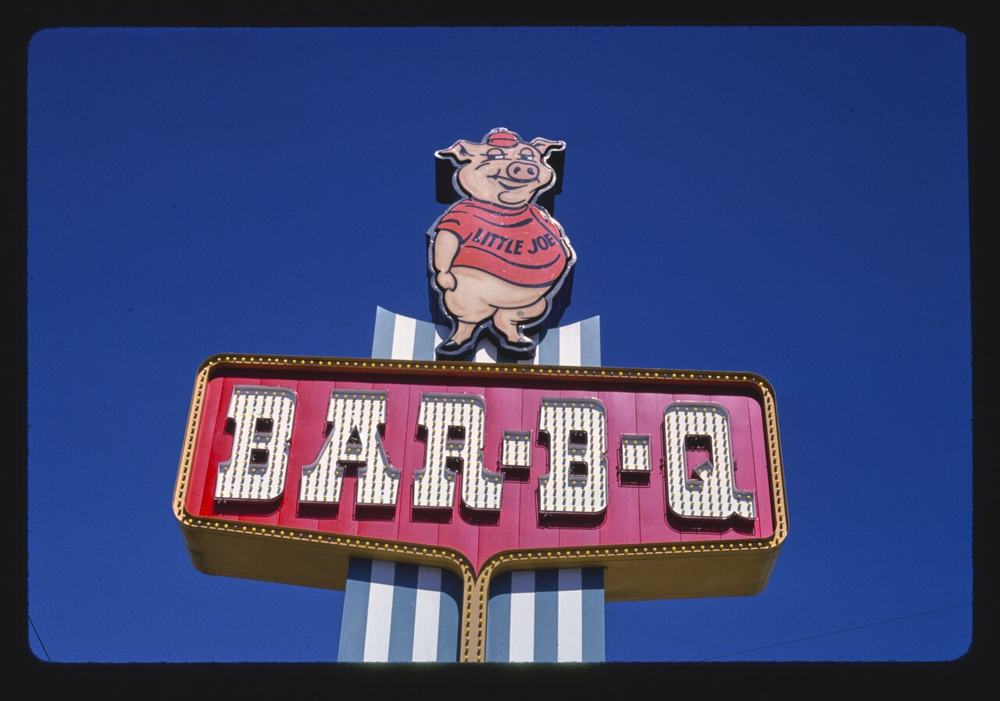
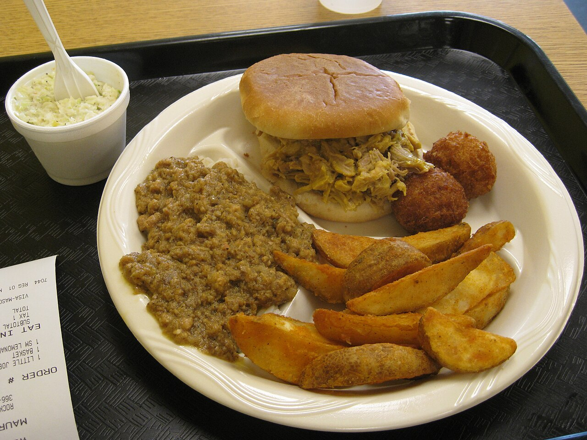

a place · SCMaurice's Piggie Park BBQ
also: Maurice's Piggie Park · Maurice's BBQ · Maurice's Gourmet Barbeque · Piggie Park · Maurice's

A chain of eight barbecue restaurants around Columbia run from the original drive-in at 1600 Charleston Highway, West Columbia, where Maurice Bessinger and his brother Joe Jr. opened in 1953. Pork hams cook twenty-four hours over hickory coals at the West Columbia pits and go out daily to the 'Pit-Stop' locations; the meat is served chopped, in sandwiches and plates, with the yellow mustard sauce the company bottles as Southern Gold — sold for decades as Carolina Gold. Maurice's sons Lloyd and Paul, his daughter Debbie and his grandchildren run it. The name also carries a 1968 Supreme Court case and the flag fight of 2000.
When they are open
Sunday to Thursday 10 to 9, Friday and Saturday 10 to 10.
open closed not published · Cited · web-piggiepark-west-columbia · checked 2026-09-16 · why so many close Sunday
The story Cited · wp-maurice-bessinger
Joe Bessinger opened his first restaurant in Holly Hill in 1939 with a mustard sauce of his own. His son Maurice, born in Orangeburg County in 1930, came home from the Korean War in 1952 and with his brother Joe Jr. opened Maurice's Piggie Park, a drive-in, in West Columbia in 1953; by 1964 there were four. That year Anne Newman, the wife of a Black minister, was refused entry, and Matthew J. Perry filed a class action under Title II of the Civil Rights Act of 1964; Bessinger answered that his religion compelled him to oppose integration. The district court held the Act reached his sandwich shop but not the drive-ins; the Fourth Circuit reversed; and in Newman v. Piggie Park Enterprises, 390 U.S. 400 (1968), the Supreme Court held 8–0 that a plaintiff who wins such an injunction ordinarily recovers attorney's fees. Bessinger ran for the legislature in 1964 and for governor in 1974; by 1999 his was the largest barbecue business in the country, with Carolina Gold in some 3,000 groceries. On July 1, 2000, the day the Confederate flag came off the State House dome, he raised it over his restaurants. Bi-Lo, Food Lion, Harris Teeter, Kroger, Piggly Wiggly, Publix, Sam's Club, Wal-Mart and Winn-Dixie dropped the sauce; he sued them for $50 million and lost at the state Supreme Court in 2007. His brothers' Charleston restaurants were reported as independent concerns, 'sans the politics'. His children took the company, took the last flags down in 2013, and sell the sauce as Southern Gold. Maurice died on February 22, 2014. On October 26, 2024 a three-alarm fire destroyed the pits, kitchen and offices beside the West Columbia restaurant; the restaurant and its sign survived, three locations reopened within a week on rented smokers, and Lloyd Bessinger said: 'we want to be positive, we want to help people.'
How it is done Cited · web-piggiepark-history
Pork hams — not whole hogs — cook twenty-four hours over hickory wood coals at the original West Columbia pits, the company says, and the barbecue is delivered daily to the other locations, the 'Pit-Stops' where customers drive in. The meat is chopped for sandwiches and plates and dressed with the family's yellow mustard sauce, whose bottled recipe lists mustard, brown sugar, soy sauce and vinegar. The company sells the sauce by the bottle, the half gallon and the gift box.
Today Cited · web-piggiepark-home
Open: eight locations — West Columbia (Charleston Highway), Irmo, downtown Columbia on Elmwood Avenue, Devine Street, Clemson Road, O'Neil Court and two in Lexington — per the company's site on September 15, 2026. The West Columbia restaurant reopened within a week of the October 2024 fire; the pit house and offices behind it are being rebuilt.
Facts
| state | SC |
|---|---|
| status | open |
| founded | 1953 |
| fuel | wood |
| styles | South Carolina mustard barbecue |
| region | The South Carolina Midlands, South Carolina |
| address | 1600 Charleston Hwy, West Columbia, SC, 29169 · Lexington County Cited · web-piggiepark-home |
| where | 33.9709, -81.0775 (street) · OpenStreetMap · open in maps Harvested · osm |
| links | Maurice's Piggie Park BBQ — official · Maurice Bessinger — Wikipedia · Newman v. Piggie Park Enterprises, Inc. — Wikipedia |
| confidence | high · needs verification · updated 2026-09-16 |
Not to be confused with
- Bessinger's Bar-B-Q — Both are Bessinger houses with Joe's mustard sauce. Maurice's is the West Columbia chain from 1953, with the court case and the flags; Bessinger's is Thomas Bessinger's Charleston house from 1960, run separately.
Near here
Crow-flies miles; the road is always longer. The finder sorts every pit in both states from where you are.
- 1 mi — Hite's Bar-B-Que West Columbia 🐖 Whole hog 🔥 Cooks over wood 📅 Weekends only
- 1 mi — True BBQ West Columbia ✊🏾 Black-owned 🔥 Cooks over wood 🍚 Serves hash
- 19.6 mi — Big T Bar-B-Q Gadsden ✊🏾 Black-owned 🔥 Cooks over wood 🍚 Serves hash
- 24.7 mi — Cannon's BBQ Little Mountain ⚫ Closed 🔥 Cooks over wood 🍚 Serves hash
- 25.2 mi — Jackie Hite's Bar-B-Q Batesburg-Leesville ⚫ Closed 🐖 Whole hog 🔥 Cooks over wood
Its kin
Who points back
Pictures


{kind=link}
Sources
- Maurice Bessinger — Wikipedia · link
- Newman v. Piggie Park Enterprises, Inc. — Wikipedia · link
- Barbecue in South Carolina — Wikipedia · link
- Uncover Our Rich History — Maurice's Piggie Park BBQ · link
- Maurice's Piggie Park BBQ — locations · link
- Maurice's Piggie Park continues to serve hungry customers week after fire takes out BBQ operations center (November 3, 2024) · link
- Maurice's Piggie Park reopens main location after fire (November 2, 2024) · link
- Owner of Maurice's BBQ determined to rebuild and move past family's controversial history (October 29, 2024) · link
- S.C. barbecue king stands his ground (September 22, 2002) · link
- Confederate flag still flies over Piggie Park — Ariel Sabar (October 5, 2002) · link
- OpenStreetMap — places tagged cuisine=barbecue in North Carolina and South Carolina · link
- The South Carolina BBQ Hash Map · link
- True 'Cue SC — certified pits · link
- Maurice's Piggie Park — West Columbia, Charleston Highway · link
Where it came from: Cited a source we name · Harvested pulled from an open dataset · Tradition what the tradition says, hedged · Inference this project's reasoning · Field somebody stood there. This record as JSON.